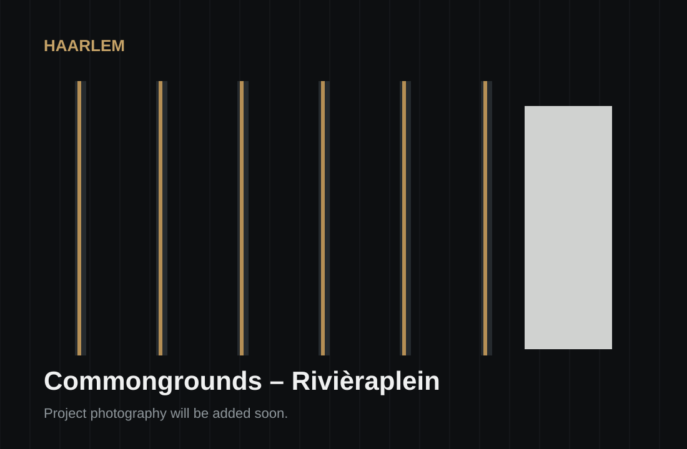
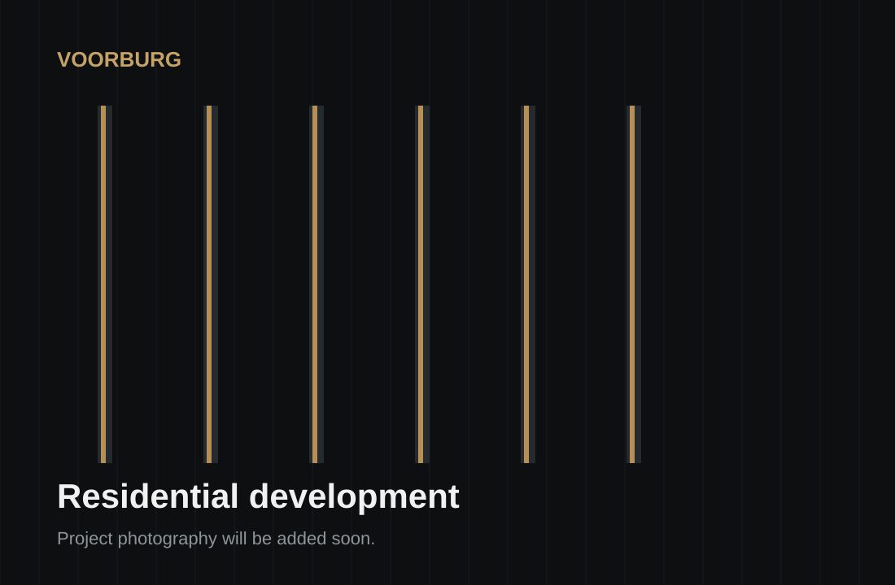
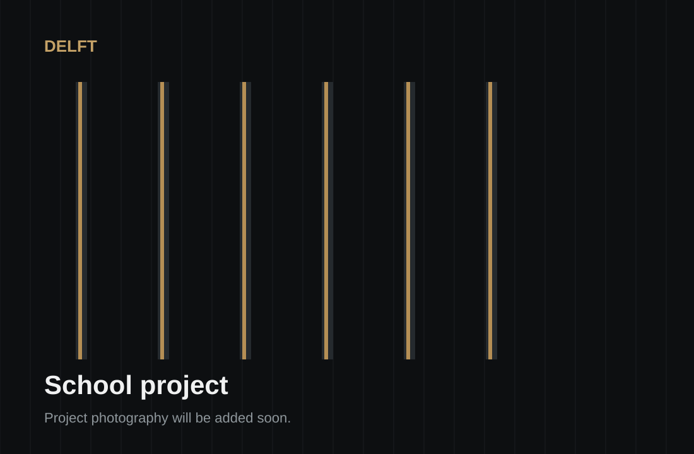
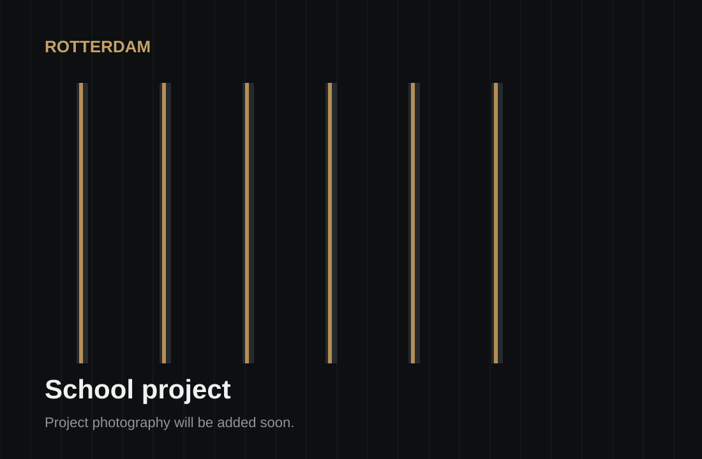

Metal Stud
Partition walls, lining systems and framing for residential and utility projects.
VLDT Extreme Drylining BV delivers specialist drylining and interior fit-out works for residential and utility projects across the Netherlands.
Practical execution, clear coordination and a focus on quality throughout the programme.
Partition walls, lining systems and framing for residential and utility projects.
Gypsum board installation for high-volume and technically detailed drylining works.
Suspended structures, plasterboard ceilings and selected ceiling systems.
Acoustic, thermal and fire-performance insulation within drylining systems.
Panel floor installation within selected interior construction packages.
Doors, Heraklith and related interior construction works where required.
Project experience shown below was delivered within contractor and subcontractor structures. VLDT does not claim main-contractor status where this was not the contractual arrangement.

Current high-rise residential drylining experience. Real project photography will be added as works progress.

Drylining and plasterboard experience across a multi-building residential project.

Drylining and interior fit-out experience within an education project.

Drylining and interior fit-out experience within a school project in Rotterdam.
VLDT aims to work as a specialist subcontractor that can take ownership of a clearly defined drylining package: production, coordination, quality and programme.
Clear scope, measurable progress and agreed deliverables.
Practical communication with supervisors, project teams and adjacent trades.
Experience with larger residential and utility projects.
A practical focus on workmanship, safe site behaviour and programme commitments.
VLDT is built on approximately a decade of hands-on drylining and interior fit-out experience in the Dutch construction sector.
The company focuses on practical delivery: understand the scope, organise the work, coordinate clearly and deliver to the agreed quality and programme.
For tenders, subcontracting opportunities and project enquiries, contact VLDT Extreme Drylining BV.